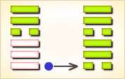
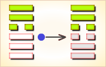
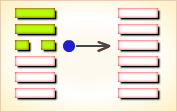

周易第9卦_小畜卦(风天小畜)_巽上乾下
如有疑问互相交流，微信：470283584
周易第9卦详解
小畜卦原文
小畜。亨。密云不雨，自我西郊。
象曰：风行天上，小畜。君子以懿文德。
白话文解释
小畜卦：吉利。在西郊一带浓云密布，但雨没有下来。
《象辞》说：上卦为巽，巽为风；下卦为乾，乾为天，和风拂地，草木低昂，勃勃滋生，这是小畜的卦象。君子观此卦象，取法催发万物的和风，自励风范，推行德教。
《断易天机》解
小畜卦巽上乾下，为巽宫初世卦。小畜为小的蓄积、小的阻碍，阳盛而阴不足，以致不得不暂时停顿，但终究还能亨通。
北宋易学家邵雍解
力量寡弱，阻止前进；藏器待时，耐心推进。
得此卦者，力量薄弱，运势反覆，宜蓄养实力，静待时机，急进则有险，凡事须耐心推进。
台湾国学大儒傅佩荣解
时运：平平无奇，受人牵制。
财运：外表不错，内多耗损。
家宅：小康，须防口舌；娶得淑女。
身体：风火之症；小孩吉，大人凶。
传统解卦
这个卦是异卦（下乾上巽）相叠，乾为天，巽为风。喻风调雨顺，谷物滋长，故卦名小畜（蓄）。力量有限，须待发展到一定程度，才可大有作为。
大象：蓄养之量有限，力不从心，故宜忍耐蓄养实力，静待时机。
运势：运势反覆，有口舌之争，但难于短期内解决，须忍耐，静待时机。
事业：时机尚不成熟，应当耐心而积极地积存力量，切不可冒险行动。遇到挫折不可灰心，鼓起勇气战胜困难，坚持原则，加强团结合作，提前做好各项准备，会有所成。
经商：已有一定的基础，但有失去危险，一定要特别慎重，争取与他人真诚合作，共同获利，决不贪心，适可而止，但更不能满足现状，不图进取。
求名：树立远大目标，尽最大努力去争取，虚心求教他人，取得真诚帮助，实现自己的理想，警惕小人的破坏。
婚恋：双方必须十分忠诚，第三者插足的现象极有可能发生。
决策：不很顺利，前进途中会遇到一些意想不到的困难。但由于本人性格坚强，具有战胜不利条件的意志。因此，可以实理自己的理想。但极有可能遭到小人的伤害，必须得到志同道合者的真诚相助，才能可能排除障碍。对所得应满足，适可而止，切不可过度追求，以免满招损。
台湾张铭仁解卦
小畜：表示小有积蓄。是个小吉卦，事事不可贪大，投资理财均需保守为佳。健康无碍，平顺。
解释：稍有积蓄。
特性：上进心，求知欲强，思想灵敏，察言观色，善解人意，追求精神层次，美好事物。有艺术美学方面天分。
运势：有蓄聚、阻止之意。 一阴畜五阳，虽有云雨而不下，雨之不下，大地不能得到滋润，故此运势有反覆、有口舌、又难以急调，诸事宜忍耐，等待时机。尤其女人得此卦更应在行为上，对事或对人有所节制。
家运：不和且多是非，衰而不振，多劳，要耐心应对，以待时机。雨过天必晴。
疾病：危，重病，注意肝胆，头部病变。
胎孕：宜防流产。
子女：因子女而劳碌之象，但晚年有福也。
周转：有女人从中阻碍，不成也。
买卖：景气不好，买卖难成或利薄。
等人：不会来，临时变卦。
寻人：因感情或家庭不和出走，只在原处。东南或西北之向。
失物：似乎遗失的是金器或现金支票等物，有被硬物夹住，或者第三格的地方。
外出：准备尚未充分，不得仓促出行，尤其忌长途旅行，会有意外的灾害。应另择他日外出。
考试：不理想。
诉讼：会因证据不足而败诉。
求事：希望渺小。
改行：不宜。
开业：不宜，已开业者则困难、口舌多。
周易第9卦初九爻详解
初九爻辞
初九。复自道，何其咎？吉。
象曰：复自道，其义吉也。
白话文解释
初九：由原路返回，有什么灾祸？吉利。
《象辞》说：由原路返回，其含义是吉利。
北宋易学家邵雍解
平：得此爻者，宜守旧业，不宜创新。谋事者，须防猜忌疑惑之祸。做官的会闲位复职。
台湾国学大儒傅佩荣解
时运：退守自保，无灾无难。
财运：守稳旧业，不宜创新。
家宅：不求于外，家道自亨。
身体：安静休养，可以复原。
初九变卦

初九爻动变得周易第57卦：巽为风。这个卦是同卦（下巽上巽）相叠，巽为风，两风相重，长风不绝，无孔不入，巽亦为顺、谦逊的态度和行为，可无往不利。
周易第9卦九二爻详解
九二爻辞
九二。牵复，吉。
象曰：牵复在中，亦不自失也。
白话文解释
九二：牵引着返回，吉利。
《象辞》说：牵引着返回，吉利，因为九二之爻处于下卦中位，像人操行中正，自然不会有错失。
北宋易学家邵雍解
吉：得此爻者，有人相助，营谋遂意。做官的有升迁之机会。
台湾国学大儒傅佩荣解
时运：因人成事，获利大吉。
财运：创业守成，两皆为宜。
家宅：兄弟和睦，家道兴隆。
身体：旧疾复发，小心调养。
九二变卦

九二爻动变得周易第37卦：风火家人。这个卦是异卦（下离上巽）相叠。离为火；巽为风。火使热气上升，成为风。一切事物皆应以内在为本，然后伸延到外。发生于内，形成于外。喻先治家而后治天下，家道正，天下安乐。
周易第9卦九三爻详解
九三爻辞
九三。舆说辐，夫妻反目。
象曰：夫妻反目，不能正室也。
白话文解释
九三：车子坏了一个轮子。夫妻互相口角。
《象辞》说：夫妻口角，说明不能治理家庭。
北宋易学家邵雍解
凶：得此爻者，荣而见辱，进而见退，或有足目之疾，或夫妻反目，或君臣疏远，或朋友是非，血气损伤。
台湾国学大儒傅佩荣解
时运：阴盛阳衰，内外不安。
财运：逆向操作，可以获利。
家宅：家庭不和，婚姻不利。
身体：阴阳不察，慎择良医。
九三变卦

九三爻动变得周易第61卦：风泽中孚。这个卦是异卦（下兑上巽）相叠。孚本义孵，孵卵出壳的日期非常准确，有信的意义。卦形外实内虚，喻心中诚信，所以称中孚卦。这是立身处世的根本。
周易第9卦六四爻详解
六四爻辞
六四。有孚，血去惕出，无咎。
象曰：有孚惕出，上合志也。
白话文解释
六四：捕获了俘虏，战争危险暂时消除了，但仍须保持警惕，才能没有灾难。
《象辞》说：捕获了俘虏，保持着警惕，说明尚能统一意志。
北宋易学家邵雍解
平：得此爻者，心诚者，人情和合，营谋颇遂。做官的会得到上司的提拔，久任者，能转运。
台湾国学大儒傅佩荣解
时运：切忌争斗，出门远避；升迁靠长官提拔。
财运：利西北，不利东南；邻里相助。
家宅：管理得宜，否则受累。
身体：宽解治之，燥烈之药不宜。
六四变卦

六四爻动变得周易第1卦：乾为天。这个卦是同卦（下乾上乾）相叠。象征天，喻龙（德才的君子），又象征纯粹的阳和健，表明兴盛强健。乾卦是根据万物变通的道理，以“元、亨、利、贞”为卦辞，表示吉祥如意，教导人遵守天道的德行。
周易第9卦九五爻详解
九五爻辞
九五。有孚挛如，富以其邻。
象曰：有孚挛如，不独富也。
白话文解释
九五：捕获俘虏，串连搁缚，这些财物与邻邑同享。
《象辞》说：捕获俘虏，串连捆缚，财物与邻邑同享，并非一人独享。
北宋易学家邵雍解
吉：得此爻者，能得到他人的帮助，百谋称心。做官的会得到上级的赏识，下属的拥戴，德高望重。
台湾国学大儒傅佩荣解
时运：一时亨通，无往不利。
财运：百货聚积，自有大利。
家宅：既富且贵，惠及邻里。
身体：手足麻痹之症。
九五变卦

九五爻动变得周易第26卦：山天大畜。这个卦是异卦（下乾上艮）相叠。乾为天，刚健；艮为山，笃实。畜者积聚，大畜意为大积蓄。为此不畏严重的艰难险阻，努力修身养性以丰富德业。
周易第9卦上九爻详解
上九爻辞
上九。既雨既处，尚德载。妇贞厉。月几望，君子征凶。
象曰：既雨既处，德积载也。君子征凶，有所疑也。
白话文解释
上九：久雨新停，还赶得上栽种作物。妇女占得此爻则凶险。夏历某月十四日君子离家出行也有危险。
《象辞》说：久雨新停，未误农时，当能丰登满载。君子离家出行有凶险，因为对充满危险的旅途缺乏了解。
北宋易学家邵雍解
平：得此爻者，会受到小人的骚扰，宜修德养身，不妄进者，则可免灾。妇女占得此爻则凶，君子离家出行有凶险。
台湾国学大儒傅佩荣解
时运：长期梦想，终可如愿。
财运：得利则止，切忌过贪。
家宅：前困后亨。
身体：须防营养过多。
上九变卦
上九爻动变得周易第5卦：水天需。这个卦是异卦（下乾上坎）相叠，下卦是乾，刚健之意；上卦是坎，险陷之意。以刚逢险，宜稳健之妥，不可冒失行动，观时待变，所往一定成功。